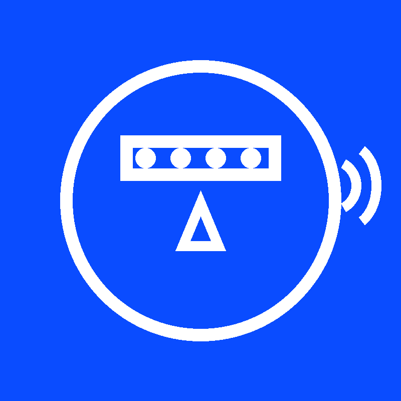
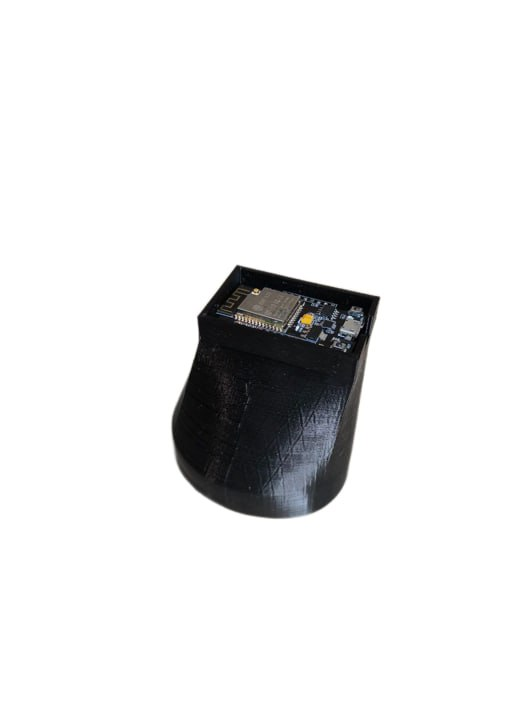

Считыватель Показаний Счётчика (СПС)
Устройство, которое автоматически передает показания без вашего участия
Перейти в TelegramСПС — это компактное устройство, которое помогает автоматически получать показания с водяных, газовых или электрических счётчиков. Оно фотографирует шкалу прибора, распознаёт цифры и отправляет их в удобный формат пользователю.
Мы создали СПС для тех, кому важно передавать данные вовремя, получать точную информацию и не тратить время на ручной осмотр счётчиков.

Устройство включает в себя:
Камера делает снимок шкалы счётчика, далее изображение отправляется в облачный сервис. Система распознаёт цифры и передаёт пользователю уже готовые данные. Всё происходит автоматически, без вашего участия.
Удобное внесение показаний, развитие системы «умного дома».
Возможность контролировать расход без посещения объекта.
Контроль работы оборудования и инженерных систем.
Автоматизация процессов и снижение ошибок при передаче данных.
Нет, СПС устанавливается поверх любого счётчика.
Да, данные доступны в Telegram или в панели управления.
Да, предусмотрена внутренняя подсветка.
Подпишитесь на наш Telegram-канал и узнавайте о новостях и новых возможностях СПС.
Наш Telegram